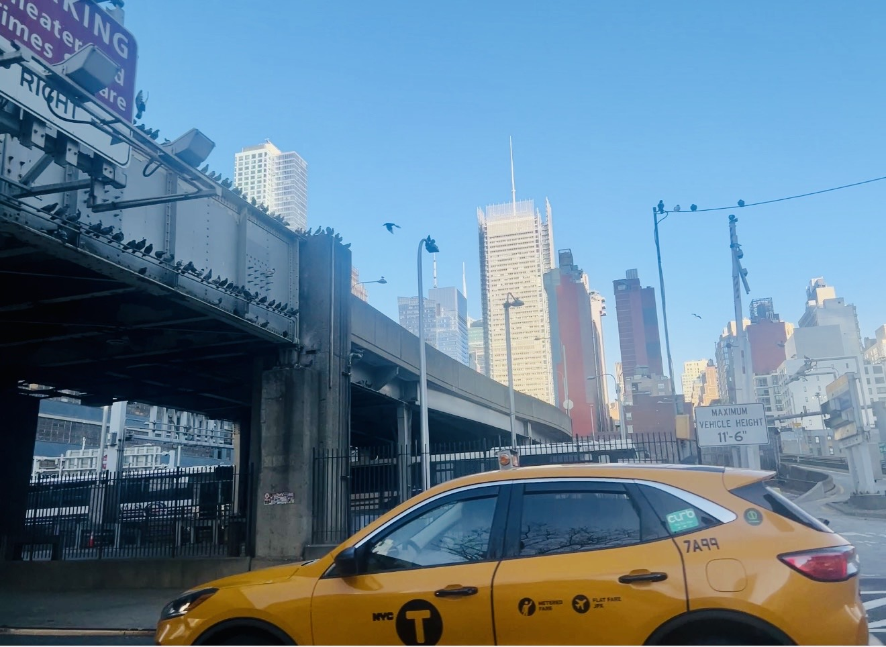

Uber / Lyft
That’s $43.01 for three trips, an average of $14.34 each.
Read the review →Getting around San Francisco without a car, with receipts.
I’m a USF student and I don’t have a car, which in San Francisco means I’m always doing math. Do I walk, wait for a bus, or pay someone to drive me a few miles? This blog is me answering that with my own receipts instead of guesses.
I’m not going to tell you what’s best. I’m going to show you what I paid and let you be mad about it too.

I’m reviewing three ways to get around the city: cabs and Uber, Muni, and Waymo. Each one gets the same three questions. What did it cost, how long did it take from start to finish, and how much work was it for me? The numbers come from real rides I took between Friday, October 9 and Sunday, October 11, 2026, plus one bus trip from Haraz Coffee on Kearny Street. If you’re a student without a car, this is for you. I’m not going to tell you what’s best. I’m going to show you what I paid and let you be mad about it too.
That’s $43.01 for three trips, an average of $14.34 each.
Read the review →It costs $0 every time I get on, which is the only price my brain cares about.
Read the review →I complained a lot about people losing their personality, and then I paid $23.22 for a ride with none at all.
Read the review →